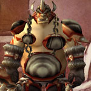

You can find the Dire Maul Gordok Commons dungeon within Feralas, Kalimdor.
The coordinates are (61.7,24.9)


Route:
Map 1

Bosses:
1. Guard Mol'dar2. Stomper Kreeg3. Guard Fengus4. Guard Slip'kik5. Captain Kromcrush6. Cho'Rush the Observer7. King Gordok
Quick Boss Tactics:
/i His attacks cause physical damage. Shield Charge knock a player back. Calls for help at 50%. Goes into Frenzy.
/i His attacks cause physical damage. Shield Charge knock a player back. Calls for help at 50%. Goes into Frenzy.
Quick Boss Tactics:
/i Knocks back with War Stomp. Avoid front cone Booze Spit which reduces chance to hit by 75%. Drunken Rage increases his speed. Goes into Frenzy.
/i Knocks back with War Stomp. Avoid front cone Booze Spit which reduces chance to hit by 75%. Drunken Rage increases his speed. Goes into Frenzy.
Quick Boss Tactics:
/i Try clearing surrounding mobs before boss fight. His attacks deal physical damage. Shield Charge knock a player back. Calls for help at 50%. Goes into Frenzy.
/i Try clearing surrounding mobs before boss fight. His attacks deal physical damage. Shield Charge knock a player back. Calls for help at 50%. Goes into Frenzy.
Quick Boss Tactics:
/i Shield Charge knock a player back. His attacks deal physical damage. Shield Charge knock a player back. Calls for help at 50%. Goes into Frenzy.
/i Shield Charge knock a player back. His attacks deal physical damage. Shield Charge knock a player back. Calls for help at 50%. Goes into Frenzy.
Quick Boss Tactics:
/i During Mortal Cleave players healing will be reduced by 50%. Fears players. At 50% health boss summons 2 Gordok Reavers to fight.
/i During Mortal Cleave players healing will be reduced by 50%. Fears players. At 50% health boss summons 2 Gordok Reavers to fight.
Quick Boss Tactics:
/i He will randomly choose a class, he will either be a priest, shaman, or mage. He will have healing spells on priest & shaman.
/i He will randomly choose a class, he will either be a priest, shaman, or mage. He will have healing spells on priest & shaman.

Quick Boss Tactics:/i During Mortal Strike players healing will be reduced by 50%. War Stomp stuns nearby players. Knocks a random player in air dealing physical damage.